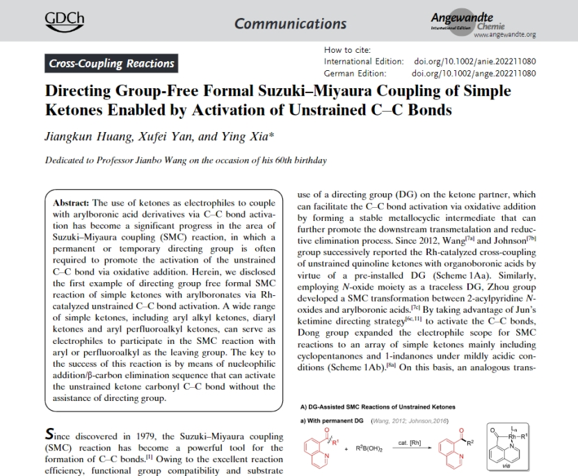

学院通知 · 科研创新
华西公卫/生物国重室夏莹研究员团队在简单酮碳碳键活化偶联反应领域取得重要进展
发布时间：2022-11-16
近日，华西公共卫生学院/华西第四医院公共卫生与预防医学实验中心夏莹研究员团队在化学领域权威期刊Angew. Chem. Int. Ed.杂志在线发表了题为“Directing Group-Free Formal Suzuki−Miyaura Coupling of Simple Ketones Enabled by Activation of Unstrained C−C Bonds”的研究论文。论文第一作者为四川大学2020级博士研究生黄江坤、第二作者为华西公共卫生学院博士后阎旭飞博士，夏莹研究员为论文的独立通讯作者，论文完成单位为四川大学华西公共卫生学院（华西第四医院）/生物治疗国家重点实验室。 Suzuki−Miyaura偶联（SMC）反应自1979年被报道以来得到了极大的发展。经典的SMC反应是以芳基卤化物的C−X为亲电偶联位点，在随后的几十年中C−O、C−N、C−S等碳杂键作为亲电偶联位点也逐渐得到发展。随着非张力碳碳键活化反应的发展，基于更加惰性的C−C键的SMC反应也开始被研究，如酮类化合物的SMC反应。然而，目前文献所报道的非张力酮的SMC反应主要局限在使用导向基来辅助碳碳键的活化。对于固定导向基而言，其引入和去除将会大大降低目标反应的效率；尽管使用临时导向基可以在一定程度解决这个问题，但该策略并不适用于具有空间位阻的常见的二芳基酮和邻位取代的芳基酮。因此发展无导向基参与的简单酮的SMC反应具有重要意义。 夏莹研究员课题组发展了一种无导向基参与的简单酮的Suzuki−Miyaura偶联反应，该反应可以兼容芳基烷基酮、二芳基酮和芳基三氟甲基酮三种常见类型的底物，具有广泛的底物适用性。该工作最初是受到无导向基的非张力三级醇碳碳键活化的启发，作者将该过程与芳基铑物种对酮的加成和芳基铑的质子化反应相结合设计了如上的催化循环。对1，2-加成，β-碳消除和质子化过程的反应速率进行研究，通过控制反应条件得到1，2-加成>质子化> β-碳消除的反应速率顺序，作者认为这种匹配的反应速率确保了芳基硼酯对酮高效加成的同时，剩余的硼酯能够被快速质子化以避免芳基硼酯对产物酮的过度加成和消除。整篇工作以高达96%的收率实现三类酮底物共82个底物的SMC反应研究。最后作者设计一系列实验对反应机理进行了验证：表明三级醇为反应的中间体以及1，2-加成>质子化> β-碳消除的反应速率顺序；得出全氟烷基>>缺电子的芳基>电中性/富电子的芳基>>烷基的消除速率顺序，该消除选择性可以较好解释底物的反应选择性。 夏莹研究员是国家级人才计划入选者、四川省人才计划入选者，2019年5月由我校华西公共卫生学院/华西第四医院和生物治疗国家重点实验室联合引进，目前担任华西公共卫生学院/华西第四医院公共卫生与预防医学实验中心主任，博士生导师。至今已在本领域顶级或重要刊物发表SCI论文60余篇，其中第一或通讯作者论文40余篇，论文总引用数大于4000。 上述研究得到了四川大学启动经费、国家自然科学基金委和四川省科技厅项目的支持。 论文链接：https://onlinelibrary.wiley.com/doi/10.1002/anie.202211080
